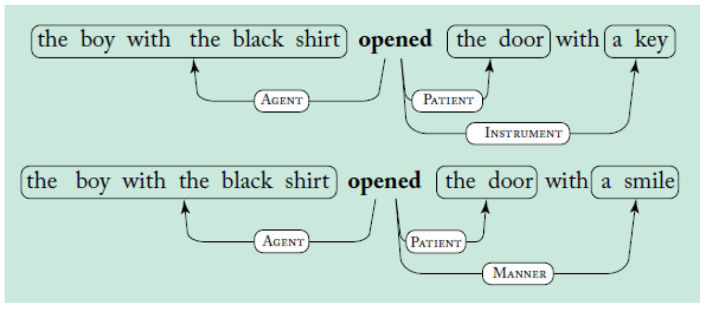
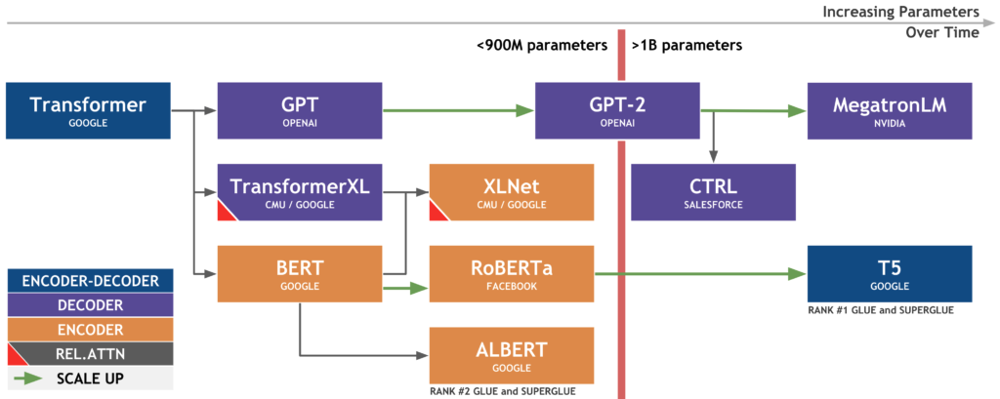
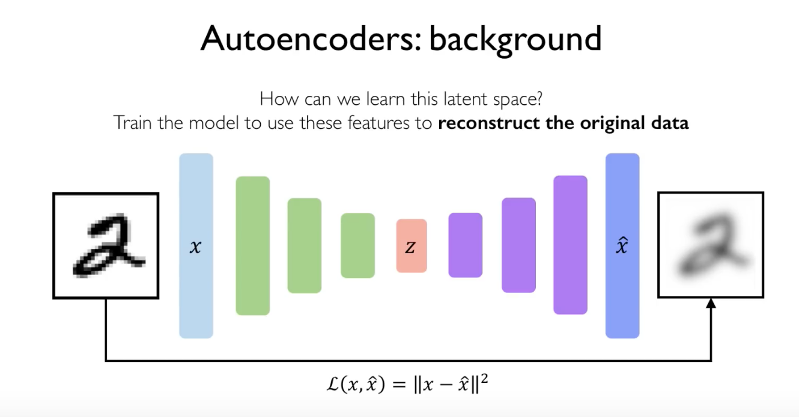
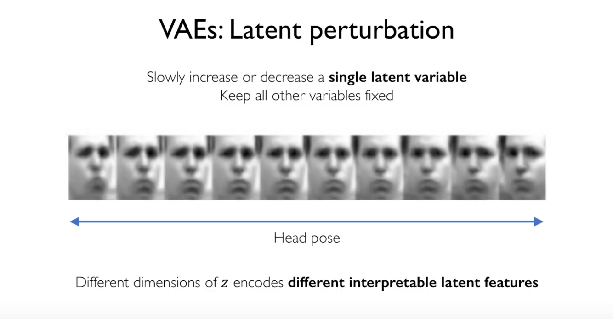
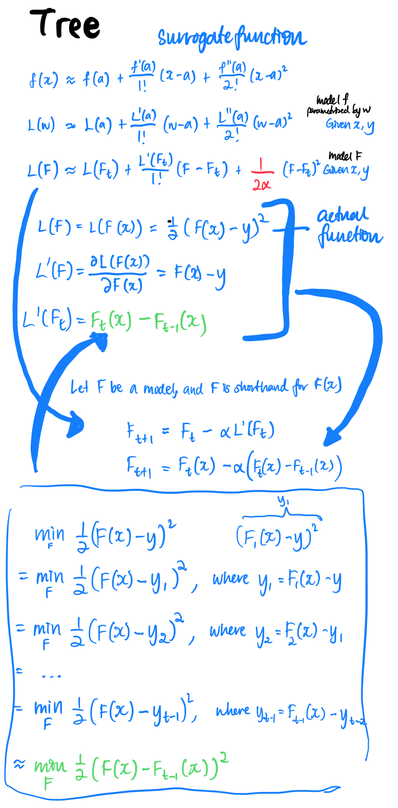

EDA
https://www.kaggle.com/gunesevitan/titanic-advanced-feature-engineering-tutorial
- Missing values
- Fill using information from correlation
- Fill using group information
- Fill via knowledge (search)
- Fill via heuristics (how a value is obtained in the real world)
- Importance of visualisation in the right angle
- Distribution of a feature with hue=(train, test)
- Remarks
- Engineering features based on information gain (against target).
- High cardinality indicates that a lot of feature engineering can be done. Convert high cardinality to count. (Is it always okay?)
- Create a feature that is your own proxy of the target variable.
Anomaly detection
https://scikit-learn.org/stable/modules/outlier_detection.html#
https://github.com/arundo/adtk
Methods
- Outlier detection: training data already contains outliers
- Local outlier factor
- Isolation forest
- One-class SVM
- Robust covariance
- Novelty detection: training data not polluted by outliers
- One-class SVM
- Local outlier factor
UI
- Widget captioning
- Screen summarisation
- Command grounding
https://ai.googleblog.com/2023/02/a-vision-language-approach-for.html
Models
| Year | Model | Modes | Architecture | Params |
|---|---|---|---|---|
| 2022 | Mid Journey | |||
| 2021 | Latent Diffusion | |||
| 2020 | StyleGAN | Image | GAN | |
| ViT | Image? | Transformer | ||
| 2018 | EfficientNet | Image | ||
| BigGAN | GAN | |||
| 2017 | ResNeXt-50 | Image | ||
| Mask R-CNN | Image | Object detection | ||
| 2016 | Xception | Image | ||
| Inception-v4 | Image | |||
| Inception-ResNet-V2 | Image | |||
| DenseNet | Image | |||
| 2015 | Inception-v3 | Image | ||
| ResNet-50 | Image | |||
| U-Net | Image | Encoder-decoder | ||
| DCGAN | Image | GAN | ||
| 2014 | VGG-16 | Image | 138M | |
| Inception-v1 | Image | |||
| GAN | Image | |||
| 2012 | AlexNet | Image | 60M | |
| 1998 | LeNet-5 | Image | 60K | |
| ? | Fast R-CNN | Object detection | ||
| ? | Faster R-CNN | Object detection | ||
| ? | CycleGAN | GAN | ||
| ? | GauGAN | GAN | ||
| ? | YOLO | Object detection |
Prompt engineering
- Retrieval-Augemented QA
- PAL - (Gao et al 2023)
- Self-Ask - (Press et al 2022)
- Chain-of-Thought - (Wei et al 2022)
Language
The field of designing methods and algorithms that take as input or produce as output unstructured human language.
Some characteristics of natural language are
- discrete / symbolic
- compositional
- letters form words, words form phrases and sentences, sentences form documents
Vocabulary
Context = neighbouring words
Semantic = what this set of letters mean
Syntax = where does a word occur in a sentence, in relation to other words, related to grammar (conjugation, pluralise)
Vocabulary size = no. of unique words
Tokens = no. of words
Pivot word = current word
Context-dependent aspects of word meaning
Downstream task = supervised learning tasks that utilise a pre-trained model or component
Vocabulary size
Sequence length
Semantic questions:
- capital & country
- currency & country
- city & state
- man & woman
Syntax questions:
- adjective to adverb
- opposite >???
- comparative
- superlative
- present participle
- nationality adjective
- past tense
- plural nouns
- plural verbs
Concepts
Ideas
- Language modelling
- predict-the-next-word (vanilla)
- cloze task (masked language modelling)
- next-sentence prediction (next sentence prediction)
- ?? cloze task with permutations ?? (permutation language modelling)
- Modelling: architecture
- RNN
- Transformer
- Autoregressive (sequential)
- Decoder + encoder (autoencoder)
- Bidirection
- Sequence-to-sequence
- Modelling: components
- Self-attention
- Modelling: algorithms (?)
-
Teacher forcing

-
Tasks / applications
- Level 1
-
POS tagging

-
Constituency parsing
Break down a text into sub-phrases

-
Dependency parsing
Analyses the grammatical structure of a sentence, starting with the root. The word that has no dependency is called the root of the sentence. The verb is taken as the root of the sentence in most cases.

-
Semantic role labeling
Semantic role labelling assigns labels to words/phrases to indicate their semantic role in the sentence. Eg. "agent", "patient", "instrument", "manner".

-
Coreference resolution
Keep track of entities
-
- Level 2
-
Text classification
-
Sentiment analysis
Classify emotions (positive or negative)
-
NER
Identify named entities (eg. people, location, organisation, number, product)
-
Language modelling
-
Semantic similarity
-
Text generation
-
Topic modelling
-
Keyword extraction
-
Event extraction
-
Relation extraction
-
Information extraction
Extracting structured information from unstructured data. Over the years, this task has been broken down into NER, coreference resolution, entity linking, relation extraction, even extraction etc.
-
- Level 3
-
Summarisation
-
Machine translation
-
Open IE
Open Information Extraction. "Open" means any kind of relationships. This is in contrast to relation extraction where the relations do not need to be specified in advance.
Born in a small town, she took the midnight train going anywhere.- (born, she, in a small town)
- (took, she, the midnight train going anywhere)
- (going, the might train, anywhere)
-
Textual entailment
aka NLI (natural language inference)
Whether Sentence A (“premise”) can be implied or contradicted by Sentence B (“hypothesis”)
(SentenceA, SentenceB) → Entailment | Contradiction | Neutral
-
QA
AKA machine comprehension. QA answers natural language questions by selecting an answer span within an evidence text.
Types of machine comprehension
- Open-domain vs. closed-domain
- Abstractive vs. Extractive
- Factoid vs. Non-Factoid
-
VQA
Visual question answering
-
Image captioning
-
Chitchat dialogue
-
Paraphrasing
-

Data types
- Text
- Parallel corpus
- Documents
- Text with labels
Frameworks
-
fairseq
-
spacy.io
-
Neuralcoref
-
NLTK
-
gensim
-
TensorFlow
-
Universal Language Model Fine-tuning (ULMFiT) for trf learning
-
compromise.cool
-
ONNXT5 inference-ready
question: ... ? context: ...summarize: ...translate english to french: ...
Benchmarks
GLUE score (General Language Understanding Evaluation)
ROUGE (recall-oriented understudy for gisting evaluation)
SuperGLUE
XGLUE
Multimodal
- Text
- Tabular
- Vision
Processing
Preprocessing I
- Remove stop words
- Lowercase the text
- Strip punctuations
Preprocessing II
- Word tokenisation
- Lemmatisation
- Stemming
- Sentence segmentation
Tokenisatin
Token: ‘smallest unit of language in the eyes of computer’. Tokenisation is especially useful in agglutinative languages like Turkish.
Algorithms
- Character
- Subword
- BPE (Byte-Pair Encoding). By frequency. Implementations: SentencePiece, fastBPE.
- WordPiece. By likelihood
- Unigram Language Model
- Syllable tokenisation
- Character n-grams (by fasttext)
- rsennrich / subword-nmt
- Word
Libraries
- Moses
- Whitespace
Embeddings
“Representation Learning”
Represent how something functions syntactically (position) and semantically (meaning) + relationships
How to generate a numerical representation of the tokens? Need to train with some data so that model understands the world
Character
- CNN
Subword
- WordPiece
- Unigram Language Model
- MOE (Misspelling Oblivious Embeddings)
- BPEmb (https://github.com/VKCOM/YouTokenToMe)
- sentencepiece (google / sentencepiece)
Word
- Bag-of-words
- TF-IDF
- Gensim’s Word2Vec
- NNLM (Neural Network Language Model)
- Word2Vec
- Skip-Gram. word and phrase representations learned by Skip-gram model exhibits a linear structure that makes it possible to perform precise analogical reasoning using simple vector arithmetics
- CBOW
- GLoVe
- ELMo
- Contextual: The representation for each word depends on the entire context in which it is used.
- Deep: The word representations combine all layers of a deep pre-trained neural network.
- Character based: ELMo representations are purely character based, allowing the network to use morphological clues to form robust representations for out-of-vocabulary tokens unseen in training.
- LDA
- fastText
- MUSE (Multilingual Unsupervised or Supervised word Embeddings)
Sentence
- USE (multilingual)
- InferSent
- SentenceBERT
- LASER Language-Agnostic SEntence Representations. Trained on 90+ languages. Model has the ability to accept code-switching!
- LaBSE
Document
- Doc2Vec
- Bag-of-words
- TF-IDF
Summary
| Model | Encoding | Characteristics | Optimiser | Word-to-embedding | Available modules trained on | Getting embeddings |
|---|---|---|---|---|---|---|
| NNLM | MLP with projection layer and hidden layer | |||||
| Skip-gram | One-hot encoding of words | MLP with projection layer | Gradient descent | 1-to-1 | Wikipedia English | Output |
| GloVe | Co-occurrence matrix | SVD-like | Gradient descent | 1-to-1 | Output | |
| fastText | Character-level (subword).Character n-grams | ? | ||||
| ELMo | Character-level CNN (subword) | Bi-directional, LM | Gradient descent | 1-to-many | 5.5B tokens from Wikipedia 1.9B | Aggregate output layers |
| Transformer | Self-attention, seq2seq | ? | ||||
| BERT | LM, transformer | Aggregate encoder stack layers |
Encoding
How to encode a...?
-
Token
- One-hot
- Bag-of-x
- Aggregate of x (concat, sum)
-
Position
- absolute positional embedding
- relative position embeddings
- sinusoidal positional embedding
- RoPE -- Rotary positional embedding
Representation
Sparse Representations
sparsity problem
no similarity
- One-hot encoding (1-of-V coding)
- Multi-hot encoding
Traditional
- n-gram
- Bag of words
Denser Representations: Embedding / embedding vector / vector representation / word representations in vector space
learned lookup table
idea: every word is represented by a vector
Embeddings: Frequency-based
- Count Vectors
- TF-IDF (term frequency - inverse document frequency)
- Co-occurence matrix
Embeddings: Prediction-based
- Skip-gram: learning embeddings by predicting word contexts
- CBOW
- fastText: robust embeddings using subword information
- GloVe: learning embeddings of size 100 from word co-occurrence (Global Vectors for Word Representation)
- ELMo: Embeddings from Language Models (pre-trained)
- PPMI matrix decomposition (using SVD) to get word embeddings
- Skip-Thought Vectors
- Doc2Vec
- USE (universal sentence encoder)
- NNLM (neural network language model)
Language modelling
Difference between encoder and language model is that encoders output a vector whereas LMs output a sequence of tokens.
https://web.stanford.edu/class/cs124/lec/languagemodeling.pdf
https://lilianweng.github.io/lil-log/2019/01/31/generalized-language-models.html
https://syncedreview.com/2017/09/10/language-model-a-survey-of-the-state-of-the-art-technology/
- Why model language?
- Types of language models
- Statistical language model
- Neural language models
- How?
- Types of fine tuning
- What did we learn?
Why model language?
Natural language is not deterministic unlike programming language. This randomness in the sequence of words can be modelled probabilistically.
Types of language models
- Statistical language model (count-based)
- Neural language model (continuous-based)
Statistical language model
Model
We first fix $n$ to be the length of this sequence of words. A language model is the (joint) probability distribution over a sequence of words
$$ p(w_1, w_2, ..., w_n) $$
where $w$ is any word available in the language's vocabulary and $\theta$ are the parameters of the model and which can be conveniently broken down into
$$ p(w_n|w_{n-1}, w_{n-2}, ...,w_1) \times ... \times p(w_3|w_2,w_1) \times p(w_2|w_1) \times p(w_1) =\prod_i p(w_i|w_{i-1}, ..., w_1) $$
or (for better readability)
$$ p(w_1) \times p(w_2|w_1) \times p(w_3|w_2,w_1) \times ... \times p(w_n|w_{n-1}, w_{n-2}, ...,w_1) $$
The way we model language is that the choice of the next word ("next-word prediction") depends on the previous words which have said ("realise").
Now let's compute the joint probability
$$ p(\text{its}, \text{water}, \text{is}, \text{so}, \text{transparent}, \text{that}) $$
or rather let's try to predict the next word, say finding out if the next word is the:
$$ p(\text{the} | \text{its}, \text{water}, \text{is}, \text{so}, \text{transparent}, \text{that}) $$
which equals to (by Bayes):
$$ \frac{ p(\text{its}, \text{water}, \text{is}, \text{so}, \text{transparent}, \text{that}, \text{the}) }{p(\text{its}, \text{water}, \text{is}, \text{so}, \text{transparent}, \text{that})} $$
We could take the counts based on our data:
$$ \frac{ Count(\text{its}, \text{water}, \text{is}, \text{so}, \text{transparent}, \text{that}, \text{the}) }{Count(\text{its}, \text{water}, \text{is}, \text{so}, \text{transparent}, \text{that})} $$
But this is impossible
Markov assumption as approximation
In the $n$-th order Markovian assumption, we assume the next word depends on the last $n$ words.
We simplify the problem to instead find ("bigram model")
$$ p(\text{the} | \text{that}) $$
or ("trigram model")
$$ p(\text{the} | \text{transparent}, \text{that}) $$
or
$$ p(\text{the} | \text{so}, \text{transparent}, \text{that}) $$
or to generalise, we simplify the problem to be
$$ p(w_1, w_2, ..., w_n) \approx \prod_i p(w_i|w_{i-k}, w_{i-k-1}, ..., w_{i-1}) $$
where $k$ is the number of preceding words before $w_i$. Another way to look at this is:
$$ p(w_i| w_1, w_2, ..., w_{i-1}) \approx \prod_i p(w_i|w_{i-k}, w_{i-k-1}, ..., w_{i-1}) $$
The value $k$ then represents if its a unigram model ($k=0$), bigram ($k=1$) or $n$-gram.
Solution to optimisation problem
A common solution is to use MLE. Below is for a bigram model.
$$ p(w_i|w_{i-1})=\frac{count(w_{i-1}, w_i)}{count(w_{i-1})} $$
Tweaks
- Laplace smoothing (for unseen words)
Problems
- Sparsity
- Curse of dimensionality
Neural language models
Model
$$ p(\text{word}|<k \text{ previous words}>, \theta_{model}) $$
Architectures
-
FFNN
-
RNN
-
Transformers
The key/value/query concepts come from retrieval systems. For example, when you type a query to search for some video on Youtube, the search engine will map your query against a set of keys (video title, description etc.) associated with candidate videos in the database, then present you the best matched videos (values). Source
How?
-
Pre-train, framed as a language modelling
Pretraining is usually down on a huge corpus.
-
Applying to downstream tasks:
- Fine-tune (specialise), framed as predicting conditional probabilities
- Discriminative tasks
- Generative tasks
- Abstractive tasks
- Feature-based tasks
- Fine-tune (specialise), framed as predicting conditional probabilities
1. Teach the model the world ("pre-training")
A language model is the statistical model that...
-
Native language
-
What's the next word? What are the next words? ("causal language modelling" / "next-token prediction")
GPT, GPT2, GPT3, CTRL, Transformer-XL, Reformer, XLNet, ProphetNet
-
Cloze ("masked language modelling"). Predict only the masked words.
BERT
-
Can this be the next sentence? What could be the next sentence? ("next sentence prediction") (CLM?)
BERT
-
Were these 2 sentences swapped? If swapped, can I still figure out the context? ("sentence ordering prediction")
-
Define what task I want to do, then work on it ("instructional language modelling")
CTRL, T5, GPT3?
-
Correct my sentence. Which words did I miss out? ("correctional language modelling")
-
Summarise the content ("summarisational")
- Mask a span of tokens as a single mask token
- GSG (Pegasus)
-
Downstream tasks ("fine-tuning")
-
Which words were replaced? Which words are "natural" to you? ("adversarial language modelling")
-
Learning with images and sounds etc. ("multimodal")
-
Understanding the context
XLNet
-
Reading / understanding long texts ("high attention")
Transformer-XL, Longformer
-
Factual language modelling
-
-
Learning a new language ("cross-language modelling" / "translation language modelling")
- (SentenceInLanguageA, SentenceInLanguageB)
What is the model built for?
- Generate only (decoder? only, autoregressive). Eg. generate text
- Understand (autoencoder) and possibly use it for something useful next time. Eg. Sentence classification.
- Understand and generate (sequence-to-sequence). Eg. translation, summarisation
Data sources:
Common sources are Wikipedia, web news, web question-answer pages and discussion forums.
2. Applying / Fine-tune / datasets / downstream tasks / see how well you trained the model
(SuperGLUE tasks)
-
Discriminative tasks
Grammar
- CoLA (GLUE)
Sentiment analysis
- SST-2 (GLUE)
-
Generative tasks
- Summarisation
- ELI5
- XSum
- ConvAI2
- CNN/DM
- Summarisation
-
Unclassified
- Sentence similarity / paraphrase
- STS-B (GLUE)
- QQP (GLUE)
- Question answering
- SQuAD
- QNLI (GLUE)
- Textual entailment
- MNLI (GLUE)
- Translation
- WMT
- Sentence similarity / paraphrase
Speed
Reformer
-
Continual learning
-
Understanding the context first (dual encoder, one decoder)
-
Lack of information (data)
-
Causal language modelling
AKA next-word prediction, next-token prediction
-
Mask language modelling
- Randomly mask 15% of input tokens
- Model to predict the masked tokens
-
Next-sentence prediction
Ever example is a tuple of
((Sentence A, Sentence B), B is next | B is not next)

https://huggingface.co/transformers/model_summary.html
This categorisation is based on the question "how do you train/teach these models?" Note that it does not mean that they do not share the same architecture.
Types of fine tuning
https://ruder.io/recent-advances-lm-fine-tuning/
- Adaptive fine-tuning — specialise to target domain
- Pre-training
- Adaptive fine-tuning on target data
- Fine-tuning on task labels
- Behavioural fine-tuning — specialise to target task
- Pre-training
- Behavioural fine-tuning on relevant tasks
- Fine-tuning on task labels
- Parameter-efficient fine-tuning — reduce model size
- Text-to-text fine-tuning — ?
What did we learn?
- Pretraining, then fine tuning
- MLM
- More data is good
Topic modelling
Resources
BERT-based: https://github.com/MaartenGr/KeyBERT/
https://github.com/boudinfl/pke
| Method | Need more than 1 doc | Algorithm | Output: Doc-Topic | Output: Term-Doc | Output: Term-Topic | Output: similarity matrix |
|---|---|---|---|---|---|---|
| TF-IDF | ✓ | Frequency-based | ✓ | |||
| NMF | ✓ | SVD of term-docV = WH | ✓ | ✓ | ||
| LDA | ✓ | Probabilistic generative modelling | ✓ | ✓ | ||
| LSA | ✓ | SVD of term-docX = UΣVT | ✓ | ✓ | ||
| RAKE | Word co-occurrences, scoring system | |||||
| TextRank | Similarity (word co-occurrences) | ✓ | ||||
| Bag of words | Word frequency | |||||
| POS tagging | Linguistic approach | |||||
| NER tagging | Linguistic approach | |||||
| Random Projections |
Theory
Distributional hypothesis - The distributional hypothesis in linguistics is derived from the semantic theory of language usage, i.e. words that are used and occur in the same contexts tend to purport similar meanings
Semantic similarity
Vector space model - representing text documents as vectors
TF-IDF
(Term Frequency - Inverse Document Frequency)
words which are rare are the ones that actually help in distinguishing between the data, and carry more weight
- Get a list of unique words.
- For every word in every document, calculate
- $$tf = \frac{\text{count of this term}}{\text{total no. of words}}$$
- $$ idf = \log \frac{\text{total no. of docs}}{\text{no. of docs with this term}}$$
- $$tfidf = tf \times df$$
Document A: The car is driven on the road.
Document B: The truck is driven on the highway.
NMF
(Nonnegative Matrix Factorisation)
GloVe
- svd
RAKE
(Rapid Automation Keyword Extraction)
- Get tokens by partitioning using stop words and punctuation marks
- Get co-occurrence matrix
- Simple scoring Degree(“keyword”) = sum of no. of co-occurrences = 3+3+1+1 Frequency(“keyword”) = cell entry in co-occurrence = 3 Score(“keyword”) = degree/frequency
LDA
(Latent Dirichlet Allocation)
- Model the data as observations that arise from a generative probabilistic process that includes hidden variables (topics/themes)
- Infer the hidden structure using posterior inference
TextRank
Inspired from PageRank
Construct a (cosine) similarity matrix by comparing their vector representations (summing/average of all word embeddings in every sentence).
| Sentence1 | Sentence2 | Sentence3 | |
|---|---|---|---|
| Sentence1 | |||
| Sentence2 | |||
| Sentence3 |
Construct a (cosine) similarity matrix by comparing their vector representations or other word occurrences methods.
| Word1 | Word2 | Word3 | |
|---|---|---|---|
| Word1 | |||
| Word2 | |||
| Word3 |
Lastly, rank.
Sequence modelling
Motivation
Bag-of-words has no order
Sequence modelling design criteria
The model must be able to
- Handle variable-length sequence
- Maintain information about the order
- Share parameters across the sequence
- Track long-term dependencies
Backpropagation through time
Backpropagation through time involves many multiplication of the weight matrices and gradient such that
- Many values > 1: exploding gradients
Gradient clipping
- Many values < 1: vanishing gradients
Activation function - use ReLU
Weight initialisation - weights to Identity matrix ?, bias to zero
Network architecture - gates cells
LSTMs and GRUs
Information is added or removed through structures called gates.
- Forget
- Store
- Update
- Output

Attention
Decoder has access to all the states in the encoder. Network places attention on different parts of the input sentence.
Summarisation
Benchmark
GigaWord benchmark; ROUGE-1, ROUGE-2, ROUGE-L
https://paperswithcode.com/sota/text-summarization-on-gigaword
Types
- Extractive: identify important sentences and reproduce verbatim
- Abstractive: interpret text and generate new summary text
Extractive
- Construct an intermediate representation
- Score the sentences
- Select top k
(https://github.com/nlpyang/PreSumm)
ROUGE scoring
Recall-Oriented Understudy fo Gisting Evaluation
(Works only for extractive summaries?)
**SYS**
the cat was found under the bed
**REF**
the cat was under the bed
$$ \text{ROUGE-1} = \frac{6}{6} $$
$$ \text{ROUGE-1}_{Precision} = \frac{6}{7} $$
**SYS**
the cat, cat was, **was found, found under,** under the, the bed
**REF**
the cat, cat was, **was under,** under the, the bed
$$ \text{ROUGE-2} = \frac{4}{5} $$
$$ \text{ROUGE-2}_{Precision} = \frac{4}{6} $$
Machine translation
Terminologies
Source language
Target language
parallel corpus / bi texts - a pair of texts such that one is a translation of the other
Deceptive cognates
Syntactic duplicates
Morphology - analysis of structure of words
Syntax - analysis of structure of sentence
Syntactic analysis - an analysis of the relative grammatical function of different words in the sentence
Lemma - dictionary form
Word sense - no of meanings per word
“Stemming” - get pseudo roots (Porter stemming, 1980)
pivot language - an intermediate natural language
interlingua - an artificial language with abstract representation
polysemy - coexistence of many possible meanings for a word/phrase
sentence alignment

Theories
- Meaning is not formally defined but corresponds to the way words are used
- It should respect the main characteristics of the original text, the tone and style, details of its ideas, overall structure
Examples
The chicken is ready to eat
There was not a single man at the party
History
Rule-Based
- direct translation system
- transfer system
- interlingua
1940s - idea of autatic translation
1940s-1960s - advent of computers. naive approaches
1965-1990 nothing afterv alpac report
1990s - Statistical Machine Translation
2014 - Neural Machine Translation
Example-based translation
translation by analogy
translate: training is not the solution to every problem

Statistical machine translation
using word alignment
- Word-based translation
- Phrase-based translation
- Syntax-based translation
- Hierarchical phrase-based translation
IBM Model 1
all initial alignments have equal probability
IBM Model 2
take into account relative positions
IBM Model 3
take into account 1-n correspondences
IBM Model 4
consider moveable parts of a sentence
IBM Model 5
higher accuracy due to more complex calculations
Segment-based machine translation
Neural machine translation
Back translation
Translate from target language to source language
Sentence alignment:
two documents. Align the sentence so that we have sentence-level training examples
Models
- Translation language modelling: MLM pre-training has been extended to the multilingual setting by modifying MLM training to include concatenated translation pairs
- Seq2seq with attention
- Transformer
- Conv Seq2Seq
- Unsupervised MT
- LASER, from facebook (multilingual sentence embedding)
- MarianMT (1000 models)
- XLM
Metrics
BLEU - Bilingual Evaluation Understudy Score: metric for evaluating a generated sentence to a reference sentence.
Datasets
WMT (Workshop on Statistical Machine Translation)
OPUS http://opus.nlpl.eu
CCMatrix
CCAligned
Pretraining tasks
[MASK] tokens are tokens to predict
| Pretraining task | Given input | Predict | Examples |
|---|---|---|---|
| Language modeling (LM) | Token | Next token | GPT-XXX, Transformer XL |
| Masked language modeling (MLM) | Sentence with some [MASK] tokens | [MASK] tokens | BERT |
| Permuted language modeling (PLM) | XLNet | ||
| Denoising autoencoder (DAE) | Sentence with some [MASK] tokens, random deletion, shuffling | Original input | BART, Pegasus, DAE |
| Next Sentence Prediction (NSP) | Inputs A and B | If A precedes B | BERT |
| Machine Translation (MT) | CoVe |
Transformer models: an introduction and catalog
Models
"Foundation language models"
| Year | Model | Arch | Pretraining | Params | Applications |
|---|---|---|---|---|---|
| 2023 | LLaMA | ? | ? | 7B,13B,65B | ? |
| 2022 | GPT-3.5 | Decoder | LM | 175B | Code generation, dialog |
| OPT | ? | ||||
| LAMDA | Decoder | LM | 137B | General language modelling | |
| ChatGPT | Decoder | LM | 175B | Dialog | |
| BLOOM | Decoder | LM | 176B | Code generation | |
| Minerva | Decoder | LM | 540B | Mathematical reasoning | |
| Chinchilla | Decoder | LM | 70B | Dialog | |
| PaLM | Decoder | LM | 62B,540B | (general language tasks) | |
| 2021 | HTML | Encoder/Decoder | DAE | 400M | HTML prompting |
| Gopher | Decoder | LM | 280B | General language modelling | |
| 2020 | GPT-3 | Decoder | LM | 175B | Code generation, audio generation |
| Big Bird | Encoder | MLM | - | Longer sequence | |
| ELECTRA | Encoder | RTD | 110M-330M | Longer sequence | |
| mBART | Encoder/Decoder | DAE | 110M | Translation | |
| 2019 | XLM-RoBERTa | Encoder | MLM | 270M-550M | Translation, cross-lingual tasks |
| BART | Encoder/Decoder | DAE | 110M | Text generation | |
| ERNIE | Encoder | MLM | 114M | Entity recognition | |
| GPT-2 | Decoder | LM | 1.5B | Text generation, (general language tasks) | |
| Transformer XL | Decoder | LM | 151M | (general language tasks) | |
| RoBERTA | Encoder | MLM | 356M | Language understading, question answering | |
| T5 | Encoder/Decoder | DAE | 11B | MT, question answering, abstractive summarisation | |
| Pegasus | Encoder/Decoder | DAE,MLM | 223M-568M | Summarisation | |
| ALBERT | Encoder | MLM/NSP | 12M-60M | Language understading, question answering | |
| DistilBERT | Encoder | MLM/NSP | 66M | Language understading, question answering | |
| XLNet | Decoder | PLM | 117-360M | (general language tasks) | |
| 2018 | BERT | Encoder | MLM/NSP | 110M | Language understading, question answering |
| GPT | Decoder | LM | 117M | Text generation | |
| 2017 | Transformer | Encoder+Decoder |
Pretraining tasks
Models
| Year | Model | Modes | Architecture | Params |
|---|---|---|---|---|
| Flamingo | ||||
| PaLI | ||||
| 2022 | DALL•E 2 | Image + text | Transformer | |
| 2022 | Stable Diffusion | Image + text | ||
| 2021 | DALL•E | Image + language | Transformer | |
| CLIP | Image + language | Transformer | ||
| Stable Diffusion | Image + language | |||
| DALL•E | Image + text | Transformer | ||
| ? | GPT-3 | Image + language | Transformer | |
| ? | GPT | Image + language | Transformer | |
| 2016 | Show and Tell | Image + text |
Clustering algorithms
“Meaningful collections / meaningful groups”
“How you choose helps you understand more about them”
Uses:
- Market segmentation
- Medical. imaging
- Anomaly detection
- Image segmentation
- Generalisation (less popular together with more popular videos)
- User clustering
Why transform data?
In clustering, you calculate the similarity between two examples by combining all the feature data for those examples into a numeric value. Combing feature data requires that the data have the same scale.
Types
- Centroid-based
- k-means & k-means++ (for choosing seeds)
- FAISS (facebookresearch / faiss)
- Density-based
- DBSCAN
- OPTICS
- Distribution-based
- Hierarchical
- Unclassified
- Mean shift
Metrics
- Davies-Bouldin index
- Silhouette score
- Gini coefficient: measure degree of heterogeneity
Self-supervised learning
Training a model using labels that are inherent in the data, rather than requiring a separate set of labels.
The task that is used for pretraining is the pretext task. The tasks that we then use for fine-tuning are called downstream tasks. This is also transfer learning.
- Colorisation
- Guessing image patches
- Placing frames in thr right order
- Inpainting
- Classify corrupted images
Choosing a pretext task
The tasks that you choose needs to be something that, if solved, would require an understanding of your data which would also be needed to solve your downstream task.
Semi-supervised learning
Semi-supervised learning
Small amount of data and large amount of unlabelled data.
Weak supervision
Labelled data are noisy and imprecise.
Workflow
- Process unlabelled data to generate accuracies of label sources
- Generate training labels
- Train a powerful model
Frameworks
Snorkel: aggregate noisy labelling function outputs to automatically label training data
FlyingSquid
FixMatch
Intro to DL
Terminologies
- architecture = model = network = algorithm
- input = image = tensor = image matrix
- output = convolved feature
- input channels = input maps = depth
- output channels = feature maps = activation map
- filter = kernel = weights = feature extractor = convolution = feature detector
- feature = structure (low-level, high-level)
- resolution = dimension = size
- depth = no. of channels/filters
- class
- example = observation = sample
- Epoch = training step
- Batch = iteration
- Filter
- Downsample = encode
- Upsample = decode
Why deep learning?
- Classical ML: Features are hand engineered. Hand engineered features are
- Time-consuming
- Brittle
- Not scalable
- DL: Features are learned. Deep learning is able to extract salient information from raw data by developing a hierarchical representation of features. This automatic feature extraction is an intrinsic component of the architecture. For this reason, deep learning is often described as representation learning.
Why now?
- Big data. Data is becoming more pervasive.
- Hardware
- Software
Universal approximation theorem
A feedforward network with a single (hidden) layer is sufficient to approximate, to an arbitrary precision, any continuous function. (Neural networks are excellent function approximators.)
https://twitter.com/gabrielpeyre/status/1304645917648269312
Normalising feature values
- Roughly zero-centered, -1 to 1 often works well and roughly all our inputs are of the same scale.
- Helps gradient descent converge. Avoid NaN
- Avoiding outlier values can also help
- Can use:
- Linear scaling
- Log scaling
- Max min clipping
Networks
Perceptron (no hidden layer, with nonlinearity)
Deep neural network (multi-layer perceptron)
Perceptron components
- Inputs + Weights + bias. A high bias means that a neuron is more likely activated despite its weights.
- Linear combination
- Non-linearity (nonlinear activation functions)
- Output
Note that a combination of linear models is still linear ie b + wx + wx.
Activation functions
Decides if a neuron should be on or off, and if on, how useful is it. They also ensure that values are contained and don’t explode.
- Sigmoid
- Softmax
- ReLU (Rectified Linear Unit)
- Leaky ReLU
- CELU (Continuously Differentiable Exponential Linear Unit)
- GELU (Gaussian Error Linear Unit)
- Swish
Importance of activation function and nonlinearity
The purpose of activation functions is to introduce non-linearities into the network. In real life, almost all of our data is non linear. Nonlinearities allow you to approximate arbitrarily complex functions by introducing nonlinearities into decision boundaries.
Loss function
cost function
objective function
empirical loss
empirical risk
Binary cross entropy / negative log loss
Formulated by Claude Shannon, this loss function compares how different two distributions (true and predicted) are.
Optimisation
Solving the weights of a network with loss function is a non-convex optimisation. Proper initialisation matters. If network is composed of differentiable functions, then we can probably learn from it using gradient descent.
Gradient descent
https://www.youtube.com/watch?v=aircAruvnKk
Compute gradient using backpropagation = chain rule. How does a small change in one weight affect the final loss? Should a weight get nudged up or down? Which ones give most bang for buck (which one will have more effect on the cost function)?
We can compute the best direction that is mathematically guaranteed to be the direction of the steepest descend. This direction is related to the gradient of the loss function.
Backpropagation
Backpropagation can be thought of as gates communicating to each other, whether they want their outputs to increase or decrease, so as to make the final output value higher or lower.
Backpropagation will ensure that weights that need to be updated are updated proportionately to the loss function. Gradient signals are “distributed” to everyone.
Gradient on x*w
If x were extremely large (no preprocessing done), gradient of w will be very large too. As a result, one needs to compensate by lowering the learning rate by that factor. Another method is to perform batch normalisation. Gradients can also vanish because each additional layer can successfully reduce signals through activation functions like sigmoid. One way to prevent this is to use other activation functions like ReLU.
Learning rate
If you set your learning rate too small, you’re not really trusting your gradient on each step. What can happen is that you can get stuck in local minima, because you’re not being as aggressive as you should be to escape them. If you set your learning rate too large, you can overshoot completely and diverge. Setting the learning rate can be challenging in practice such that you avoid the local minima but small off such that you still converge.
How to set learning rate?
- Try different learning rates
- Design a learning rate that ‘adapts’ to the landscape.
- Learning rate schedulers
- One-fit cycle
- Depends on batch size (larger batch size means you are trusting the gradient more so learning rate can be increased)
Learning rate schedulers
- Constant
- Time-based decay
- Step decay
- Exponential decay
- Lambda
- Multistep LR
- Cosine annealing LR
- ReduceLR on plateau
- Cyclic
Gradient descent optimisation algorithms
- Vanilla
- Momentum
- NAG
- RMSProp
- Adam
- RAdam
- SWA
(Batch) gradient descent, mini-batch gradient descent, stochastic gradient descent
Gradient in gradient descent is expensive to compute over all data points. Stochastic gradient descent computes over a single data point chosen randomly. The term "stochastic" comes from the fact that the gradient based on a single training sample is a "stochastic approximation" of the "true" cost gradient. The downside of using a single point is that it’s going to be too noisy. Middle ground is to take a mini-batch, where true gradient is approximated by taking the average of the gradients.
- More accurate estimation of gradient
- Smoother convergence
- Allows for larger learning rates (because we trust the gradients more)
Stochastic gradient descent can be also taken to mean batch gradient descent.
Overfitting & regularisation
- Dropout: randomly set some of the activation of the hidden neurons to 0 with some probability (usually 50%)
- Early stopping
- JUMP START
Tensor libraries
Frameworks
- NumPy
- PyTorch & TorchScript
- TensorFlow
- JAX = JIT + Autograd + XLA
- Numba
- Keras
- PyTorch lightning
Why are NumPy arrays efficient?
- Data is stored stored contiguously (unlike Python)
- Spatial locality (???)
- Because of contiguity, vectorised instructions can be used (Intel's SSE and AVX).
View
X.view()
To check if an array is a view of another
y1.base is y
If none, it’s a copy
Creation
x = np.zeros((3,4,5)) # zeros
x = np.ones((3,4,5)) # ones
x = np.random.rand(3,4,5) # uniform [0,1]
x = np.random.randint(0,21,15)
x = np.random.normal(size=(3,4,5)) # N(0,1)
x = np.random.rand(4) # U(0,1)
x = np.array([0,0,0]) # from array
x = np.arange(0,15)
x = np.eye(3) # diagonal 3x3 matrix ones
x = torch.zeros((3,4,5)) # zeros
x = torch.ones((3,4,5)) # ones
x = torch.rand(3,4,5) # uniform [0,1]
x = torch.randn(3,4,5) # N(0,1)
x = torch.tensor([3.,4.,2.]) # from array
x = torch.empty(1,5,3) # zeros
Mathematical operations
x.dot(x) # matrix multiplication
x.argmin() # index of min
torch.matmul(x, y)
torch.mm(x, y)
Info
x.shape
x.size()
Shape manipulation
x = x.reshape(1,-1)
x = x.reshape(1,5,2)
np.reshape(x,(1,5,2))
x = x.view(1,5,-1) reshape to (1,5,?) where ? Is inferred
np.squeeze([[[[1,2,3,4]]]])
TOrch:
xy.squeeze()
Permute
x.transpose(2, 0, 1)
x.permute
Expand dimension
x[:, np.newaxis]
np.expand_dims(axis=)
x.expand()
Sorting
x.sort(axis=)
np.argsort(a)
Concat
torch.cat()
Mask
https://stackoverflow.com/questions/19984102/select-elements-of-numpy-array-via-boolean-mask-array/58365403#58365403
Gotchas
- Gradiemts are accumulated. Must zero accordingly
with torch.nogradensures that in manual gradient update, a computation graph for differentiation isnt created- Optimiser.step() updates weights for you
- Forward and callable
- Requires_grad
- When inheriting from nn.Module, the weights must be wrapped with torch.nn.Parameter() to be automatically registered as parameter. (Not sure if this is the right way but it’s something like that)
Sparse matrices
-
CSR (compressed sparse column)
Write-once-read-many
matrix is represented using three 1D arrays for the non zero values
value = [5 8 3 6]
col = [0 1 2 1]
row = [0 0 2 3 4]
Fast row access and matrix-vector multiplications.
-
LIL (list of list)
[(row,col,val), (row,col,val), (row,col,val)] -
DOK (dictionary of keys)
{(row,col): val, (row,col): val} -
COO (coordinate list)
(row,col,val), (row,col,val), (row,col,val)] -
CSC (compressed sparse row)
-
Block sparse row
Code
from scipy.sparse import csr_matrix, csc_matrix
from scipy.sparse import random
matrix = random(3,3, format='csr', density=0.4)
.todense()
.toarray()
.nnz
.data
Transfer learning
Definitions / intuitions
- "Given a loss function, theoretically, the random model will have a higher loss (think loss landscape). This is what is meant by “knowing to do something”."
- “Transfer learning is the idea that, if you know how to solve a task well, you should be able to transfer some of that understanding to solving related problems.”
- “Transfer learning is a means to extract knowledge from a source setting and apply it to a different target setting.”
- Train a model with a smaller dataset,
- Improve generalisation, and
- Speed up training.
- Transfer learning is a technique that takes a piece of a model that has already been trained on a related task and reusing it in a new model. The intuition behind this idea is, that also for other tasks or dataset the first layers of neural networks learn similar concepts to recognise basic structures such as blobs and edges. This concepts do not have be trained again from scratch when using pretrained models.
- Transfer learning is a technique in machine learning in which we apply knowledge from a source domain (e.g. ImageNet) to a target domain that may have significantly fewer data points. In practice, this generally involves initialising a model with pre-trained weights from ResNet, Inception, etc. and either using it as a feature extractor, or fine-tuning the last few layers on a new dataset. With transfer learning, these models can be re-purposed for any related task we want, from object detection for self-driving vehicles to generating captions for video clips. Use when:
- Similar domain
- Small dataset
- Extract feature
- Fine-tune last few layers
- The underlying idea of transfer learning is that neural net architectures will generalise for similar types of problems: for example, that many images have underlying features (such as corners, circles, dog faces, or wheels) that show up in a variety of different types of images. In contrast, the underlying idea of promoting neural architecture search for every problem is the opposite: that each dataset has a unique, highly specialised architecture it will perform best with.
How can knowledge be transferred?
- From a task to a downstream task (via sequential transfer learning or multitask learning)
- From a domain to another domain (domain adaptation)
- From a language to another language (cross-lingual learning)
Who can use?
- Small data
- Pathetic computer
How to fine-tune?
Gradual unfreezing
Discriminative learning rates
One-cycle training
ImageNet pretraining has been quite successful
No. Of layers
Batch normalisation
ReLU
Dropouts
- architecture
- Keep
- Modify
- Weights
- Don’t change (feature extraction)
- Modify (fine-tuning the weights)
- Manner
- One layer at a time (freezing)
- Start with low learning rates
- Regularisation (One way to minimise catastrophic forgetting is to encourage target model parameters to stay close to the parameters of the pretrained model using a regularisation term)
Given a loss function, theoretically, the random model will have a higher loss (think loss landscape). This is what is meant by “knowing to do something”.
Weight initialisation
https://www.deeplearning.ai/ai-notes/initialization/
On weight initialisation in deep neural networks
Motivation
Backpropagated gradients are either amplified or minimised. As a results, training is slowed down or diverges.
Goal
Gradient signal should not be multiplied by values that are too small or too large in any layer.
Proposition
It is proposed that across layers:
- Mean of activations should be 0 (so that it’s easier to determine what is the right variance to use for different nonlinear activation functions)
- Variance of nonlinear activations is the same (intuitively, it maintains magnitude of the signals)
such that the resulting backpropagated gradient signal will not be multiplied by values too small or too large in any layer.
$$ E[a^{[l-1]}] = E[a^{[l]}] \ Var(a^{[l-1]}) = Var(a^{[l-1]}) $$
Assumptions
- Weights are IID.
- Inputs to the first layer are IID with mean 0 and variance 1.
- Weights and inputs are mutually independent.
Types of initialisation
- Initialise with the same number = symmetrical
- Cases
- All zeros => network will not learn
- All ones => does not break symmetry
- All small => vanishing gradients; network will not learn
- All big => exploding gradients
- Cases
- Initialise with different numbers i.e. random
- Cases
- Too large => exploding gradients
- Too small => vanishing gradients
- Just nice. We want the activations to have same mean and variance across, to prevent exploding or vanishing gradients
- Cases
Initialisations to use for nonlinear activation functions
-
tanh: Xavier
$$ N(0,\frac{1}{n^{(l-1)}}) $$
-
sigmoid: Kumar
$$ N(0,\frac{3.6^2}{n^{(l-1)}}) $$
-
ReLU: He
$$ N(0,\frac{2}{n^{(l-1)}}) $$
Initialisation
Xavier initialisation
$$ N(0,\frac{1}{n^{(l-1)}}) $$
He initialisation
$$ N(0,\frac{2}{n^{(l-1)}}) $$
Others
- Xavier uniform
- He uniform
- Standard normal
- Uniform
- Zeros / other constants
- Initialising all the weights with zeros leads the neurons to learn the same features during training.
- Thus, both hidden units will have identical influence on the cost, which will lead to identical gradients. Thus, both neurons will evolve symmetrically throughout training, effectively preventing different neurons from learning different things.
Terms
Kaiming = Kaiming He
Glorot = Xavier Glorot
Bonus questions
Lack of data?
- Open source data
- Augmentation
- Synthetic data
- Transfer learning
Deep Learning Interviews: Hundreds of fully solved job interview questions from a wide range of key topics in AI
https://arxiv.org/abs/2201.00650
Frameworks
TensorFlow, Keras
PyTorch, PyTorch Lightning, einops
flashlight
JAX, Trax
Create ML
PlaidML
Core ML
turicreate
TensorFlowJS
Darknet
ONNX
Accelerate
Intel MKL
MKL-DNN
BLAS
LAPACK
CUDA
Metal
PyOpenCL
Data manipulation
cuDF
NumPy
pandas
ArrayFire
Improving predictive power
-
Progressive resizing
-
Mixup augmentation
-
Removing wrongly classified test images
-
Ensembling
-
Model Fine-tuning using discriminative learning rate etc
-
Model distillation: large models or ensembles of models may be distilled into a single, smaller model
Progressive Labelling
MixMatch
Catastrophic Forgetting is what limits learning rates at small batch sizes.
Cutout regularisation. Zero out a random 8x8 square subset of an image.
SGD optimisers
10 Stochastic Gradient Descent Optimisation Algorithms
- AdamW
Limitations and new frontiers

Neural networks only accept certain input types
Effect:
- Difficult to encode structure and prior knowledge
Frontiers:
- 2D spatial structure like images - CNN.
- Graph data like social networks, internet traffic, state machines, mobility & transport, molecules, biological networks - graph convolutional networks.
- 3D data (point clouds: unordered sets with spatial dependence between points) - CNN.
Neural networks are excellent function approximators
Effect:
- Poor generalisation, memorises data. Does not work on unseen data.
- Easily fooled by adversarial attacks (image + perturbation = ???).
Frontiers:
- (See below on uncertainty)
Neural network predictions are point predictions
Effect:
- Cannot quantify uncertainty for unseen data.
Frontiers:
- Bayesian deep learning for uncertainty. Rather then learning the weights directly, we learn a posterior over the weights i.e. P(W|X,Y). This posterior is intractable, however.
- Ensembling for uncertainty estimation.
- Evidential deep learning: directly learn the underlying uncertainty using evidential distributions.
- Multi-task learning using uncertainty
Neural networks are large
Effect:
- Data hungry
- Computationally intensive
Neural networks are complex
Effect:
- Requires expert knowledge to design and fine tune
- Finicky to optimise: non-convex, choice of architecture, learning parameters
- Uninterpretable
Frontiers:
- Automated machine learning for NAS.
Learning rate scheduler
- Cosine
Backpropagation softmax and categorical cross entropy
import torch.nn.functional as F
import torch.nn as nn
y = torch.tensor([[0,0,1]], dtype=torch.float32)
x = torch.tensor([[2,3]], dtype=torch.float32)
y_true = torch.tensor([2], dtype=torch.long)
linear = nn.Linear(2,3,bias=False)
linear.weight.data = torch.tensor([[-1,1],[2,-1],[0,2]], dtype=torch.float32)
z = linear(x)
y_pred = F.softmax(z, dim=1)
#loss = F.nll_loss(y_pred, y_true)
loss = -torch.log(y_pred[y==1])
z.retain_grad()
loss.retain_grad()
y_pred.retain_grad()
loss.backward()

Hyperparameter search
- Grid search
- One learning rate cycle / one-fit cycle
(search for the right learning rate) start low lr, increase exponentially for every batch. Plot LOSS vs. LR. We need to select a point on the graph with the fastest decrease in the loss. In this example, the loss function decreases fast when the learning rate is between 0.001 and 0.01.
Subsequently, use a cyclic learning rate scheduler and use this learning rate as the max.
Layers
Dropout
allows training on smaller datasets without over-fitting.
Batch normalization
allows for faster training. Normalise each pixel value across mini-batch
Make sure to scale the data if it’s on a very different scales. If we don’t scale the data, the level curves (contours) would be narrower and taller which means it would take longer time to converge (see figure 3).

Skip connections
why do very deep nets perform worse as you keep adding layers?
Addressing the problem of training a really deep architecture by introducing skip connections: layers can copy their inputs to the next layer
Skip connections, which are employed in ResNet and DenseNet allow to build deeper architectures, while mitigating the vanishing gradient problem. All we have to do is to add the output of previous layers to the input of layers located deeper in our network, before the activation function is applied:
Skip connections work, because by connecting layers via shortcuts, we can at least learn the identity function. The intuition behind this technique is, that gradients do not have to be backpropagated solely through convolutional (or fully connected) layers, which cause gradients to diminish once they reach the earlier layers of the network. They can rather “skip” layers through the addition operation of the skip connection.
Residual learning: instead of trying to learn some features, we try to learn some residual. Residual can be simply understood as subtraction of feature learned from input of that layer
Improving speed / accuracy
https://myrtle.ai/how-to-train-your-resnet/
During training
- Data
- Perform preprocessing once before training
- Curriculum learning - train on simple examples, then the hard ones
- Architecture
- Mixed precision training
- Smaller model
- Engineering layers
- Transfer learning
- Hyperparameters
- High learning rates (super convergence)
- Increase batch size
- Optimiser / regularisation / loss
- Mixup regularisation
- AdamW
- Label smoothing
During inference
- Quantisation. Stores weights in low precision formats
- fixed point vs floating point
- post-training quantisation vs quantisation-aware training
- Pruning
- Set some weights to 0. This cuts connections.
- Low Rank Approximation.
- convolution layer can be broken down into two layers
- Weight sharing
- Use means clustering to cluster 2.09, 2.12, 1.92, 1.87 and make them be 2. Stick to 2 bits for FCN and 4 bits for CNN
- Pruning & training iteratively
- Prune then retrain using a super small learning rate (1e-5)
Activation functions
Non-linearity functions
- ReLU
- GeLU
- SwiGLU
Deep generative models
Supervised learning: learn function to map x to y.
Unsupervised learning: learn hidden or underlying structure of data
Generative modelling: learn a model that represents distribution of data
Main tasks:
- Density estimation
- Sample generation
Why learn generative models?
Debiasing
Outlier detection
Generative models

- Autoencoder
- VAE
- GAN
Autoencoder

Encoder learns mapping from the data x to a low-dimensional latent space z (“compressed”).
Decoder learns mapping from latent z to a reconstructed observation, x_hat.
Loss function is L(x, x_hat). It doesn’t use any labels.
Reconstruction loss forces the latent representation to capture as much information about the data as possible.
VAE

Variational autoencoder
Instead of learning a deterministic latent vector z, we learn a vector of mean and a vector std that parametrise the probability distribution for each of the latent variables




GAN
Generative Adversarial Network
Instead of explicitly modelling the density (distribution of data), we just sample to generate new instances. However, we can’t sample from complex distribution directly. Thus the solution is to sample from something simple (noise), learn a transformation to the training distribution.
Adversaries (neural networks):
- The generator turns noise into an imitation of the data
- The discriminator tries to discern between a fake generated by the generator and the true data.
Uses
Style transfer: CycleGAN
Mitigating bias through learned latent structure
- Learn latent structure using VAE.
- Estimate distribution. (How?)
- Adaptively resample data.
- Learn from fair data distribution.
Decision tree
#nonparametric #nonprobabilistic
Keep splitting, split based on highest Gini Gain or Information Gain.
üí° Gini impurity is a way of measuring if a split is "good". Calculate Gini impurities (1) before split, (2) left branch and (3) right branch. Then weight the impurities of each branch (2) and (3). Then calculate how much impurity is removed by taking (1) minus the weighted (2) and (3).
Try every split:
- Every feature
- Every possible threshold (optimisable)
Stop when:
- All Gini gains are the same
- No Gini gain
Algorithms:
- ID3 (multiway)
- Brute force
- C4.5 (binary)
- Brute force
- CART
- Construct binary trees from using features and thresholds that yield highest information gain
üëâ Tree-based algorithms don‚Äôt require scaling!
DBSCAN
Density-based spatial clustering of applications with noise
#nonparametric #nonprobabilistic
The DBSCAN algorithm views clusters as areas of high density separated by areas of low density.
- Choose 2 numbers: max_distance, min_points
- Pick a random datapoint. This is cluster A
- Criteria for datapoints to be in this cluster:
- They are within a distance of max_distance
- There are more than min_points datapoints
- Once run out of points, find another datapoint that has no cluster. This is Cluster B.
Evolutionary algorithms
Subject a population to a heuristic survival-of-the-fittest competition. Individuals that score higher on the fitness function are granted more offspring in the next generation through crossover and mutation (slightly perturbed copes of themselves or combinations of themselves with other individuals). Individuals that score poorly are removed from the population.
- Genetic algorithm
- Evolution strategy
- Natural evolution strategy
Natural Evolution Strategies (OpenAI)
Individuals come from a probability distribution (usually Gaussian) around a single set of parameters. Iteratively update this population distribution such that average fitness of individuals drawn from population is maximised. Objective function is differentiable.
Gaussian process
import numpy as np
from sklearn.metrics.pairwise import rbf_kernel
class Kernel:
@staticmethod
def rbf(x_1, x_2):
K = rbf_kernel(x_1, x_2)
return K
class GaussianProcess:
def __init__(self, X, y, kernel="rbf"):
self.X = X
self.y = y
# Prepare kernel
self.k = Kernel.rbf(self.X, self.X)
# Invert kernel
self.k_inv = np.linalg.inv(self.k)
def hey(self):
pass
def update(self, X_new, y_new):
"""Not used"""
self.X = np.concatenate(self.X, X_new, axis=0)
self.y = np.concatenate(self.y, y_new, axis=0)
# Update the covariance matrix for existing training points
self.k = Kernel.rbf(self.X, self.X)
self.k_inv = np.linalg.inv(self.k)
def predict(self, X_new):
"""Predict a value"""
# Get all the kernel parts
k_new = np.array(
[Kernel.rbf(X_new, np.array([x])).reshape(-1) for x in self.X])
k_newnew = Kernel.rbf(X_new, X_new)
# Mean
y_pred = np.dot(k_new.T, self.k_inv).dot(self.y)
y_pred = y_pred.squeeze()
# Covariance
sigma = k_newnew - np.dot(k_new.T, self.k_inv).dot(k_new)
sigma = sigma.squeeze()
return y_pred, sigma
import numpy as np
from gp import Kernel, GaussianProcess
import matplotlib.pyplot as plt
# Real
X = np.linspace(1,20,10000)
X = X.reshape(1,-1)
y = np.sin(X)
plt.scatter(X,y, color='black')
# Data
SIZE = 5
X = np.random.uniform(low=1, high=20, size=SIZE)
X = X.reshape(-1,1)
y = np.sin(X) + np.random.normal(0, 0.3, SIZE).reshape(-1,1)
plt.scatter(X,y, color='yellow')
# New data
X_new = np.random.uniform(low=1, high=20, size=100)
X_new = X_new.reshape(-1,1)
# GP
gp = GaussianProcess(X, y)
y_new = gp.predict(X_new)
plt.scatter(X_new,y_new, color='red', alpha=0.5)
# Plot
plt.show()
GMM
Gaussian Mixture Model
#parametric #probabilistic
A probabilistic model that assumes all the data points are generated from a mixture of Gaussian distributions with unknown parameters
Optimiser: EM algorithm
Hierachical clustering
- agglomerative (slowly accumulate)
- divisive (slowly split)
This is achieved by use of a metric and a linkage criterion.
Examples of linkage criteria:
- Single linkage (minimum)
- Complete linkage (maximum)
- Average linkage (average between pairs)
- Ward
- Centroid
Gradient boosting

k-NN
#nonparametric #nonprobabilistic
Use a distance metric to calculate the \( k \) closest neighbours. Then, take its mean (or median etc.).

k-means
#nonparametric
Assign k centroids randomly
Get each data point to see which centroid it’s closest to, and assign a class
Calculate centre of points for each group
Reassign the k centroids
Use silhouette heuristic or the elbow method to determine a reasonable value for k

Linear models
Uses OLS. See page for assumptions.
Logistic regression
#parametric #probabilistic
A model that predicts the probability using the logistic function $$\frac{1}{1+\exp(-x)}$$
Model:
$$ \hat{p}=\frac{1}{1+\exp(-\sum_i w_i x_i)} \in[0,1] $$
A regression model whose output (termed as logits) is mapped from a real number to $(0,1)$ through the use of logistic function, which is the inverse of log odds. Log of odds is a measure of odds, which is a ratio (of probabilities).
To get the loss function, notice that each sample can be considered as a Bernoulli trial hence the model follows a Bernoulli distribution. Our objective is to maximise the likelihood, which is equivalent to minimising the negative of maximum likelihood.
Mean shift
#nonparametric
Popular in computer vision
Builds on KDE
Naive Bayes
#probabilistic
Assumes strong independence assumption between features, where each feature x is a particular distribution (usually Gaussian), so need to get the mean and std dev.
https://remykarem.github.io/blog/naive-bayes.html
Inference time:
$$ \mathbf{P}(\text{class} | x) = \frac{\mathbf{P}(\text{class}) × \mathbf{P}(x | \text{class})}{\mathbf{P}(\text{data})} $$
PCA
Principal Component Analysis
#parametric #nonprobabilistic
Premise: the useful information is the underlying axes of data that gives you most variance
- Linear dimension reduction technique
- Things that are different end up very far apart
- Maximises variance and preserves large pairwise distances
- Computationally cheap
- “Redefine new axes”
Principal components
They are the
- Underlying “axes” of data
- = “directions” (= eigenvectors) where the data is most spread out, i.e have the most variance (variance = eigenvalues)
- No. of eigenvalues/eigenvectors equals to no. of dimensions of data
- The eigenvectors are perpendicular (= orthogonal) to each other
import numpy as np
import matplotlib.pyplot as plt
from sklearn.decomposition import PCA
# Generate data
angle = np.radians(30.)
x1 = np.random.normal(scale=8, size=100)
x2 = x1*np.tan(angle) + np.random.normal(scale=3, size=100)
# x2 = np.random.normal(scale=3, size=100)
x1 = x1-np.mean(x1)
x2 = x2-np.mean(x2)
data = np.array([x1, x2])
# PCA
pca = PCA()
pca.fit(data.T)
# Matrix transformation
# angle = np.radians(30. - 360.) # same
angle_derotate = -angle
derotate = np.array([[np.cos(angle_derotate), -np.sin(angle_derotate)],
[np.sin(angle_derotate), np.cos(angle_derotate)]])
derotated_data = np.matmul(derotate, data)
rotate = np.array([[np.cos(angle_derotate), np.sin(angle_derotate)],
[-np.sin(angle_derotate), np.cos(angle_derotate)]])
rotated_data = np.matmul(data.T, rotate)
# Get explained variances
print("Variance in X: {:0.1f}".format(np.var(derotated_data[0])))
print("Variance in Y: {:0.1f}".format(np.var(derotated_data[1])))
print(pca.explained_variance_)
# Get the principal components
print(derotate)
print(rotate)
print(pca.components_.T)
# Covariance
# print(np.cov(data))
# print(np.matmul(np.matmul(derotate, data).T, rotate)) ????
SVM
Support Vector Machine
Find a separate hyperplane ("decision boundary") that has the highest margin. The datapoints which are at the margin are called support vectors.
“Large-margin classifier”
- Linear separable
- Nonlinear separable
- Soft Margin
Two types of misclassifications are tolerated by SVM under soft margin:
- The dot is on the wrong side of the decision boundary but on the correct side/ on the margin (shown in left)
- The dot is on the wrong side of the decision boundary and on the wrong side of the margin (shown in right)
- Kernel Tricks
- What Kernel Trick does is it utilises existing features, applies some transformations, and creates new features.
- Think of the polynomial kernel as a transformer/processor to generate new features by applying the polynomial combination of all the existing features.
- Think of the Radial Basis Function kernel as a transformer/processor to generate new features by measuring the distance between all other dots to a specific dot/dots — centres.
- Soft Margin
Two types of misclassifications are tolerated by SVM under soft margin:
t-SNE
#nonparametric
t-Distributed Stochastic Neighbour Embedding (2008)
- Unsupervised non-linear technique
- Things that are close remain close (?)
- preserving only small pairwise distances or local similarities
- Perplexity ~ a guess about the number of close neighbours each point has. 5-50
- Creates 2D maps from multidimensional data
- More computationally expensive
UMAP
#nonparametric #nonprobabilistic
Uniform Manifold Approximation and Projection
- The data is uniformly distributed on a Riemannian manifold;
- The Riemannian metric is locally constant (or can be approximated as such);
- The manifold is locally connected.
Similarity measures
Distance metrics
Manhattan distance
(shortest path by along a grid) L1 norm
$$ |A-B| $$
or
$$ \sum_i |a_i-b_i| $$
Euclidean distance
(shortest path) L2 norm
$$ ||A-B||_2 $$
or
$$ \sqrt{\sum_i (a_i-b_i)^2} $$
Dot product
$$ A \cdot B $$
or
$$ \sum_i a_i b_i $$
Cosine similarity
(we are interested in the orientation, not the magnitude of vectors). Value is bounded between $[-1,1]$.
$$ \cos(\theta) = \frac{A \cdot B}{||A||\cdot||B||} $$
or
$$ \cos(\theta) = \frac{\sum_i a_i b_i}{\sqrt{\sum_i a_i^2} \cdot \sqrt{\sum_i b_i^2}} $$
Pearson correlation
$$ \text{Corr}(a,b) = \frac{\sum_i (a_i-\bar{a})(b_i-\bar{b})}{\sqrt{\sum_i (a_i-\bar{a})^2} \cdot \sqrt{\sum_i (b_i-\bar{b})^2}} $$
Minkowski distance
$L_p$ norm
$$ (\sum_i (a_i-b_i)^p)^\frac{1}{p} $$
- Jaccard distance: compare the unique items
- Mahalanobis distance
- Maximum distance
- Haversine distance - distance between 2 points on a sphere
- Hamming distance
- Levenshtein distance

Dimensionality reduction
to create embeddings or projection of high-dimensional vector to 3D
(unsupervised learning)
Dimensionality reduction. Reducing the dimension helps us to visualise better
PCA - keep global distance
t-SNE - focus on local distance
UMAP - focus on local distance, but keep more global distance
Random projection
Runtime: tSNE>UMAP≥PCA
ANN
Approximate nearest neighbours
Fast computation of nearest neighbours is an active area of research. The most naive implementation i s the brute-force computation of distances between all pairs.
Fast approximate distance computations for vector similarity search
Survival analysis
To measure any duration. Time-to-event analysis.
- How long does this population live for?
- How long will a particular customer remain with your business? (After how much time will this customer churn?)
- How long will this machine last, after successfully running for a year?
Concepts
- Birth (= start)
- Death (= end)
- Survival probability
At the time of inference, it is not
Concept drift
data drift, label schema change, model drift
https://twitter.com/chipro/status/1313921889061015557?s=20
Interpretable AI
Explainable AI / Bias in AI
Resources
https://christophm.github.io/interpretable-ml-book/
https://github.com/jphall663/awesome-machine-learning-interpretability
https://microscope.openai.com/models
Explainability refers to the understanding, in simple terms, of how exactly a model works under the hood.
Interpretability refers to the ability of observing the effect that changes in the (i) input or (ii) parameters will have on predicted outputs
What is?
- Extracting insights to understand
- Why did the model make such a prediction?
- How does each feature affect a prediction? What if I did this?
For?
- Trust
- Debugging
- Future data collection
- Feature engineering
- Inform human decision-making
General
- Model cards
- explainx.ai
Tabular
Feature importance
- Tree-based models
- LIME
- Permutation importance: shuffle the data within a column
- Partial dependence plots: keep changing value for one variable
- SHAP values (Shapley additive explanations): compare a value with baseline value
- Integrated Gradients
- DeepLift
- Model-Agnostic Linear Competitors (MALC)
- Captum
Constraining nonlinear models
- Contextual Decomposition Explanation Penalization (CDEP) add a term to the loss function so models can learn how to produce good explanations
- MonoNet
Interpretable models
- Decision trees: Information gain & gini impurity. Splits that have the most impact on a prediction are kept closer to the root of the tree
- Linear models Implicitly interpretable, since they can naturally weight the influence of the weights. Perturbing the inputs or learned parameters has a predetermined effect on the outputs.
- Logistic regression
Image
Using feature visualisation and activation atlases
-
Grad-CAM (Class activation map)
Grad-CAM works by (1) finding the final convolutional layer in the network and then (2) examining the gradient information flowing into that layer. Then multiply the signals with the outputs from (1).
-
Summit
Text
- exBERT
- Ecco
- Language Interpretability Tool by Google
Libraries
- ELI5
- pdpbox
- shap
- Uber’s manifold
- What-If
CS5260 — Neural Networks and Deep Learning II
Adversarial ML
https://www.tensorflow.org/tutorials/generative/adversarial_fgsm
Intro
a machine learning technique that attempts to fool models by supplying deceptive input
adversarial example = image + noise
- Self-driving cars: kill people
- Spam classifiers
- Biometric recognition — steal money eg. apple pay
Given
$\tilde{x} = x + \eta$
where $\tilde{x}$ is the adversarial sample, $x$ is the image and $\eta$ is the perturbation,
then if
$$\eta_i < \epsilon$$
$$||\eta||_\infty < \epsilon$$
where $\eta$ is the number small enough to be discarded by the hardware,
we expect the model assigns the same class to both $x$ and $\tilde{x}$.
This also makes use of the fact that digital images often use 8 bits per pixel:
(0, 1/255, 2/255, ..., 255/255)

- Take-away
- A simple linear model can have adversarial examples if its input has sufficient dimensionality
How to attack
FGSM (whitebox)
Fast Gradient Sign Method
attacker has complete access to the model (white box attack)

One-step target class method (whitebox)


Build a substitute model
Black-box Attack, Papernot et al. AsiaCCS 2017
based on a small no. of initial queries to the model in production
How to defend
Adversarial training

Note that adversarial training can have a negative impact (lower accuracy on clean samples, compared to models that don;’t go through adversarial training)

Must do fine-tuning together with adversarial training
Recap: Batch normalisation


Use Disentangled Learning via an Auxiliary BN. Uses the AdvProp algorithm

Motivation for this is that the 2 different samples have different distributions